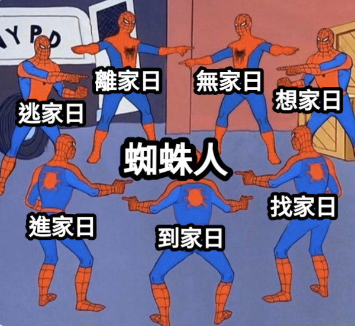

蛛蛛人
蛛蛛人小電影
《蜘蛛人：無家日》 內有暴雷，老師沒看過可以直接幫我滿分，不要看內容。
彼得·帕克的蜘蛛人身分被神秘法師揭露後，生活受到巨大影響，不只自己遭到調查，梅嬸、MJ和奈德也受到牽連。三人高中畢業後又因爭議而無法進入理想的大學。為了讓大家恢復正常生活，彼得請奇異博士施展魔法，讓世人忘記自己是蜘蛛人。然而彼得在施法過程中不斷修改條件，導致魔法失控，使來自其他宇宙、知道蜘蛛人身分的人被帶到他的世界。
隨後，彼得陸續遇到來自其他宇宙的反派，包括八爪博士、綠惡魔、蜥蜴人、電光人和沙人。彼得得知這些反派原本都與其他宇宙的蜘蛛人有關，其中一些甚至注定會在自己的世界死亡，因此他不忍心直接把他們送回去，而是決定嘗試治癒他們，改變他們原本悲劇的命運。
彼得把反派帶到快樂·霍根的公寓，成功修復八爪博士的抑制晶片，使他恢復理智。然而綠惡魔重新控制諾曼·奧斯朋，煽動其他反派反抗。混亂中，梅嬸為了保護彼得而遭到重創，臨終前提醒彼得「能力越大，責任越大」
之後，奈德意外使用奇異博士的法器打開傳送門，找到了另外兩個來自不同宇宙的蜘蛛人。三名蜘蛛人彼此分享經歷，也幫助彼得重新振作。他們一起製作解藥，準備在自由女神像附近與反派決戰，並希望治癒所有反派，而不是殺死他們。
最終決戰中，三名蜘蛛人合作治癒蜥蜴人、沙人和電光人，八爪博士也協助蜘蛛人。綠惡魔則與彼得展開激烈戰鬥。彼得因梅嬸之死一度想殺死綠惡魔，但另一名蜘蛛人阻止了他，三人最後成功替諾曼注射解藥，使他恢復正常。
然而，多重宇宙的裂縫已經無法控制。
為了拯救世界，彼得決定讓所有人徹底忘記「彼得·帕克」這個人的存在
其他宇宙的角色因此被送回原本的世界，危機也隨之解除。彼得最後向已經不認識自己的MJ和奈德告別，選擇不再打擾他們的生活。
兩週後，彼得搬進新的公寓，獨自生活。他重新縫製蜘蛛人戰服，決定不依靠過去的朋友或科技，以自己的力量繼續守護城市，展開新的蜘蛛人生活。
總結：
彼得為了拯救被多重宇宙牽連的反派與自己的世界，失去了梅嬸，也犧牲了所有人對自己的記憶，最後選擇獨自承擔蜘蛛人的責任，重新開始。
